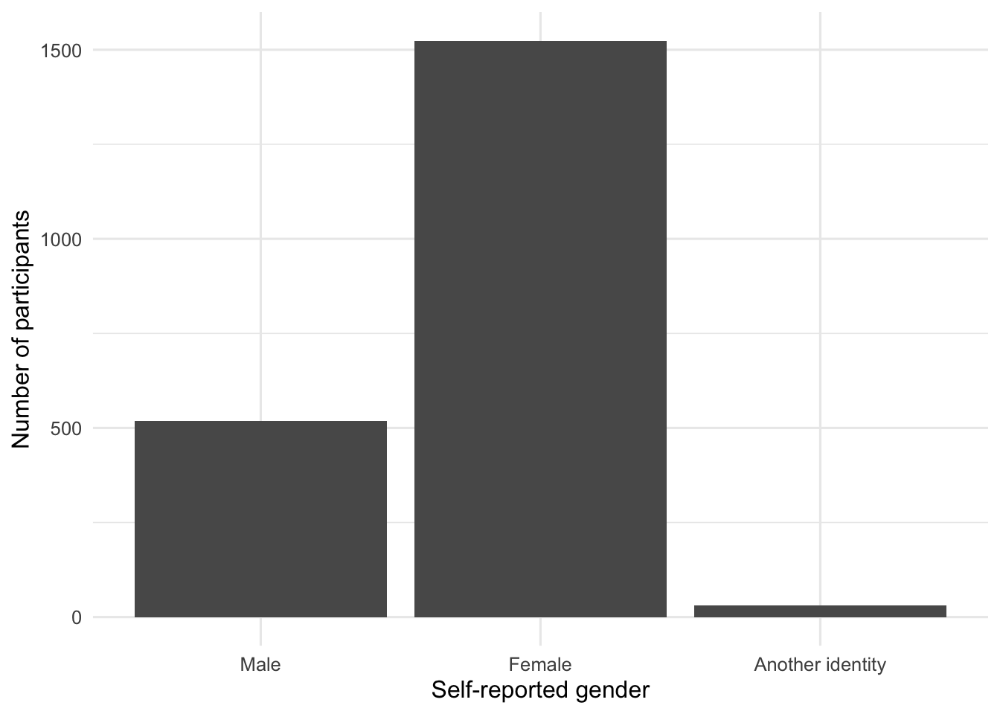

source("scripts/_setup.R")Introduction
Chapter 1: Getting started with R
Meet R, import the EAMMi2 data, and learn the core workflow used throughout this resource.
Chapter 1 of Exploring Statistics introduces the field and the language used to describe data. This companion chapter adds a practical goal: becoming comfortable enough with R to inspect a real dataset and recognize how variables are represented.
If this is your first time using R, or if you have not installed R and RStudio yet, begin with Intro to R. That page explains how to download the starter files, open the RStudio project, and run the starter script.
Learning objectives
By the end of this chapter, learners will be able to:
- distinguish R from an R project and an R script;
- import the EAMMi2 data with a project-relative path;
- inspect rows, columns, variable names, and variable types;
- distinguish numeric variables from categorical variables in R; and
- create a first reproducible summary.
TipTeaching note
In a first session, focus on reading and running code. Students do not need to memorize every function. The early win is understanding that an analysis is a sequence they can rerun.
1. Open The Starter Files
This chapter uses the same starter folder introduced in Intro to R. The starter folder includes the EAMMi2 data set and the Chapter 1 script.
After unzipping the starter files, open exploring-statistics-r.Rproj. Keeping the workbook inside an R project lets every chapter use the same portable path to the data.
Open the workbook project
- Open RStudio.
- Choose File > Open Project….
- Open
exploring-statistics-r.Rproj. - In the Files pane, confirm that you can see the
datafolder. - Open
scripts/01-introduction.R. - Click Source to run the script.
ImportantAvoid machine-specific paths
Do not write paths such as C:/Users/Name/Desktop/data.csv. In this project, the dataset is always read from data/EAMMi2-REDUCED.csv.
2. Load The Data
The chapter script begins by running the shared setup file. The setup file opens the EAMMi2 dataset and loads the R tools used in the script.
After setup runs, the object eammi refers to the EAMMi2 data frame.
3. Ask Basic Questions About The Dataset
The functions below reveal the dataset’s dimensions and variable names.
dim(eammi)[1] 2073 39names(eammi) [1] "Duration" "Finished" "FinanciallyInd"
[4] "NoLongerHome" "MOA_ACH" "Adult"
[7] "Exploration" "Negativity" "Identity"
[10] "BetweenStages" "Politics" "PoliticsDichotomous"
[13] "Party" "PartyDichotomous" "SWLS"
[16] "Mindfulness" "Belonging" "SelfEfficacy"
[19] "SupportFriends" "SupportFamily" "SupportSpecial"
[22] "SocialSupport" "SMmaintain" "SMnewconnect"
[25] "SMinformation" "SMtotal" "USdream1"
[28] "USdream2" "Conflict" "Symptoms"
[31] "Stress" "IMPmarriage" "IMPparenting"
[34] "IMPcareer" "IMPhobbies" "Gender"
[37] "Age" "Race" "Disability" dim() reports rows first and columns second. In this dataset, a row represents a participant and a column represents a variable. names(eammi) lists the names of all variables in the data frame.
Pause and predict
Before running the next code block, predict what nrow(eammi) and ncol(eammi) will return. What does each number mean in the context of the EAMMi2 study?
nrow(eammi)[1] 2073ncol(eammi)[1] 39Instructor solution
nrow(eammi) returns 2,073, the number of participants. ncol(eammi) returns 39, the number of variables retained in the reduced teaching dataset.
4. Understand Variable Types
The textbook distinguishes categorical and quantitative variables, then further describes their scales of measurement. R describes the storage type of an object. Those ideas overlap, but they are not identical.
| Statistical role | Common R representation | Example |
|---|---|---|
| Quantitative | numeric or integer | Age, Stress, SWLS |
| Nominal categorical | factor | Gender, Race, Disability |
| Ordinal categorical | ordered factor | Adult, NoLongerHome |
| Identifier | character | a participant ID, if one were included |
Some variables begin as numeric codes. For example, Gender is coded as 1, 2, and 3 in the data file. The next step gives those codes readable category names.
eammi <- eammi |>
mutate(
Gender = factor(
Gender,
levels = c(1, 2, 3),
labels = c("Male", "Female", "Another identity")
)
)
levels(eammi$Gender)[1] "Male" "Female" "Another identity"
NoteR language
The pipe |> passes the result on its left into the function on its right. Read it as “and then.” The code above says: start with eammi, and then change Gender into a labeled factor.
5. Produce A First Summary
count() creates a frequency table. Adding mutate() lets us calculate percentages from those frequencies.
gender_summary <- eammi |>
count(Gender, name = "Frequency") |>
mutate(Percent = round(100 * Frequency / sum(Frequency), 1))
gender_summary# A tibble: 3 × 3
Gender Frequency Percent
<fct> <int> <dbl>
1 Male 519 25
2 Female 1524 73.5
3 Another identity 30 1.4We can also present the same information visually.
ggplot(gender_summary, aes(x = Gender, y = Frequency)) +
geom_col() +
labs(
x = "Self-reported gender",
y = "Number of participants"
)
The table supplies exact values; the graph makes the distribution easy to compare. Neither display replaces an interpretation in words.
Practice
Exercise 1: Classify variables
For each variable, decide whether it is primarily quantitative, nominal categorical, or ordinal categorical: Duration, NoLongerHome, Adult, PoliticsDichotomous, SWLS, Belonging, Gender, and Age.
Instructor solution
- Quantitative:
Duration,SWLS,Belonging,Age - Nominal categorical:
PoliticsDichotomous,Gender - Ordinal categorical:
NoLongerHome,Adult
Reasonable disagreements about treating bounded rating-scale variables as ordinal or quantitative are worth discussing. In this workbook, these scale scores are generally analyzed as quantitative.
Exercise 2: Explore independently
- Use
glimpse(eammi)to inspect all variables. - Use
summary(eammi$Age)to examine participant age. - In one or two sentences, explain the difference between the information returned by these functions.
Instructor solution
glimpse() provides a compact overview of the entire data frame, including each column’s storage type and example values. summary(eammi$Age) focuses on one variable and returns its minimum, quartiles, median, mean, maximum, and missing-value count when applicable.
Challenge
Convert Adult into an ordered factor using Understanding EAMMi2, then create a frequency table. Explain why the order of the factor levels matters.
Instructor solution
eammi <- eammi |>
mutate(
Adult = factor(
Adult,
levels = c(3, 2, 1),
labels = c("No", "Maybe", "Yes"),
ordered = TRUE
)
)
count(eammi, Adult)The order tells R how the categories progress conceptually. It also controls their default order in tables and plots.
Chapter takeaway
A reproducible R analysis begins with a small sequence: load packages, import data, inspect the variables, make their statistical roles explicit, summarize, and interpret. Every later chapter builds on this sequence.